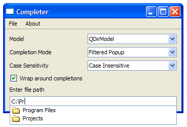

| Home · All Classes · Main Classes · Grouped Classes · Modules · Functions |
Qt 4.2 provides many improvements and enhancements over the previous releases in the Qt 4 series. This documents covers the most important features in this release, separated by category.
Since we will continue to improve and fine-tune Qt as a result of feedback and suggestions from customers and the open source community, we have not included a detailed list of changes between Qt 4.1 and this release. A comprehensive list of changes between Qt 4.1 and Qt 4.2 will be included in the Qt 4.2 final release.
A list of other Qt 4 features can be found on the What's New in Qt 4 page.
Highlights
Support for interactive graphics is provided by the Graphics View framework. This framework is an enhanced replacement for the Canvas module, previously provided with Qt 3, with a refined set of features.
The framework enables responsive handling of large numbers of canvas items through the use of a space-partitioning scheme. Support for collision detection, coordinate transformations, and item groups make it easier than before to manage items for interactive displays.
An improved API aims to make common uses easier while making advanced uses more accessible to developers.
Graphics View's enhanced presentation system, takes advantage of Qt 4's paint system to render items using anti-aliasing, and taking advantage of OpenGL to improve rendering performance. Support for printing is built into the framework, making it possible to produce high quality documents from interactive applications.
A selection of predefined item types is provided that contains, amongst others, a text item that supports inline editing.
In addition, various graphics view examples have been written to demonstrate key features of the framework, including ports of Canvas module examples from Qt 3.
This release introduces a set of features that are designed to make it easier to write applications that are integrated into users' desktop environments.
|
|
|
|
The Cleanlooks widget style, designed to closely resemble the Clearlooks style for GTK+ applications, enables Qt applications to fit in with non-Qt applications on suitably-configured GNOME desktops. See the Cleanlooks Style Widget Gallery to see how Qt's widgets look in this style.
QDesktopServices provides cross-platform support for opening and launching URLs, making it possible for applications to launch a web browser, mail composer, and other external resources by using the facilities of the user's desktop environment.
To enable closer integration with the GNOME deskop environment and tools, Qt 4.2 now contains support for the Glib eventloop. This makes it possible for Qt applications to use plugins made using other Glib-based frameworks, and even enables Qt plugins to be created for use with non-Qt applications.
The QDialogButtonBox class enables dialogs to be created that use the appropriate button order for the user's chosen desktop environment. This enables dialogs created for KDE and Windows to be reused for Mac OS X and GNOME.
|
|
|
On X11 platforms, support for the Common Unix Printing System (CUPS) has been greatly enhanced. Printer settings made available by CUPS can now be accessed via QPrintDialog for improved control over the printing process.
System tray support on all desktop platforms is provided by the new QSystemTrayIcon class, which exposes a comprehensive set of features via an intuitive Qt-style API.

The new QCompleter class provides a framework for handling text completion in input widgets. Completion facilities can be set up for use in QLineEdit, QComboBox and custom widgets. An example is included which shows how text completion can be used with a selection of different models and data sets.
Widgets can be styled using style sheets that follow a syntax similar to that used by Cascading Style Sheets (CSS) for HTML. Many of the more common customizations to widget styles can be made using style sheets, making it largely unnecessary for developers to create entire custom widget styles with QStyle subclasses.
The style sheet for any given widget can be accessed via its styleSheet property. Style sheets are fully described in the Qt Style Sheets document.
An Undo framework based on the Command pattern has been introduced to help developers provide undo/redo features in applications. The provision of an undo framework in Qt means that developers can take advantage of a common, well-tested set of classes to improve usability and concentrate on higher-level functionality.
The framework provides support for command compression to improve usability when many low-level or similar repetitive commands are used. Command macros can also be employed by developers to enable sequences of commands to be programatically applied via the framework in single steps. Additionally, the concept of a clean state is supported, enabling applications to clear the undo buffer when certain operations are performed, such as saving a file.
Qt 4.2 provides support for Inter-Process Communication (IPC) using the D-BUS protocol. This service-oriented protocol provides fast, low latency communication that can be used for same-machine communication between applications, yet also allows Remote Procedure Calling (RPC) mechanisms to be implemented.
Using the QtDBus module, an application can provide services to other applications by exporting objects, as well as use such exported services itself. The QtDBus module also extends Qt's Signals and Slots mechanism, making it possible to connect to other applications.
See the Introduction to D-BUS document for more information about using D-BUS with Qt.
Qt 4.2 also provides a number of new features for graphical user interface applications, expanding the range of available widgets while extending overall functionality.
A specialized font combobox is now available for use in text editing and related applications.

Facilities for displaying monthly calendars and date selection are provided by QCalendarWidget, a class adapted from the Calendar Widget Qt Solution.
The main window classes have been updated to be more responsive to user activity. In particular, when a user moves a floating dock window over a dock area by the user, any other dock windows in that area will automatically make room to allow it to be dropped there. These enhancements can be seen in the Dock Widgets example.
Access to OpenGL framebuffer objects is provided by the QGLFramebufferObject class; this enables textures to be painted with a series of calls to QPainter functions in the usual way for QPaintDevice subclasses.
Improved support for platform-native message boxes is provided by QMessageBoxEx. This class uses QDialogButtonBox to positioned buttons using the appropriate conventions for the user's platform and desktop environment.
Many improvements have been made to the classes and tools that provide underlying functionality in Qt. Many of these changes involve introducing higher level functionality that aims to make application development easier while providing a more robust working environment for users.
The QFileSystemWatcher class enables applications to monitor files and directories for changes. This feature is often used by applications and libraries that share access to files with other applications.
The item view classes have been optimized for performance and reliability, and new classes have been introduced:
The HTML import and export facilities have been enhanced in the rich text classes, and now include support for CSS-like style sheets.
A time line class has been introduced for use in widgets that provide animations. By using a mechanism that uses signals and slots to notify other application components about changes to a time line, this class can also be used for other timing purposes with non-GUI classes.
The addition of a Scalable Vector Graphics (SVG) icon engine enables icons to be created from pictures in this vector graphics format. This reduces the number of fixed-size images that developers need to include with applications, and avoids the need to provide sufficiently high resolution images to cover all possible icon sizes.
Support for detection and reporting of network interfaces is provided by the QNetworkInterface class.
Qt's keyboard handling has been improved to support physical key recognition. This allows keyboard shortcuts to be created that specify the keys that users see on their keyboard instead of generic logical key assignments.
QKeySequence now provides a range of standard shortcuts that developers can use when creating actions. These describe commonly-used high-level actions, such as Undo, Copy, and Paste, and enable shortcuts to be specified in a true cross-platform way.
Support for dynamic properties extends the standard Qt property system, enabling new properties to be added to instances of QObject subclasses at run-time.
Many improvements in Qt are specific to Qtopia Core and are concerned with graphics support and rendering performance.
Direct painting to the screen can be enabled on by bypassing the backing store on a per-application basis.
Support for 18 and 24 bits-per-pixel color depths has been added to the paint system. Color depths that assign 6 bits to each color (or alpha) channel are commonly used on mobile devices.
Alongside many general improvements and optimizations, the transformed screen driver has been optimized to improve performance when rendering rotated content.
| Copyright © 2007 Trolltech | Trademarks | Qt 4.2.2 |